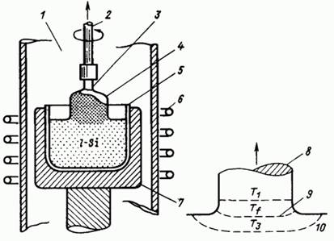
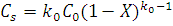
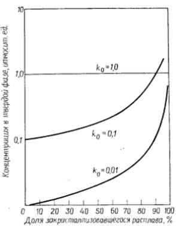

электронный
ресурс по учебной дисциплине 1-58 01 01 - "ИНЖЕНЕРНО-ПСИХОЛОГИЧЕСКОЕ ОБЕСПЕЧЕНИЕ ИНФОРМАЦИОННЫХ ТЕХНОЛОГИЙ"
|
||
| Оглавление | Программа | Теория | Практика | Контроль знаний | Об авторах | ||
|
Практика
ЛАБОРАТОРНАЯ РАБОТА №1 Исследование процессов роста кристаллов Цель работы: Изучить распределение концентраций примесей в слитке кремния. Написать программу и построить зависимости выходных параметров от входных. Теоретические сведения Кремний, встречающийся в природе в виде кремнезема или силикатов, - наиболее важный полупроводниковый материал для электронной промышленности. В настоящее время приборы на основе кремния составляют ~98% всех проводимых в мире полупроводниковых приборов. Кремний – один из наиболее хорошо изученных элементов периодической таблицы Менделеева. Кремний широко используется и в таких отраслях промышленности, как стекольная и ювелирная. Потребительское значение этого элемента в основном связано с использованием его минеральных форм, в виде которых он существует в природе, а также с его изобилием. Кремнезем входит в состав сырья при производстве стекла, а некоторые виды силикатов высоко ценятся как полудрагоценные камни. Составляя по весу 25% земной коры, кремний по степени распространения в природе находится на втором месте, уступая только кислороду. Основной объем монокристаллического кремния (80-90%), потребляемого электронной промышленностью, выращивается по методу Чохральского. Метод Чохральского — метод выращивания кристаллов путём вытягивания их вверх от свободной поверхности большого объёма расплава с инициацией начала кристаллизации путём приведения затравочного кристалла (или нескольких кристаллов) заданной структуры и кристаллографической ориентации в контакт со свободной поверхностью расплава. Может использоваться для выращивания кристаллов элементов и химических соединений, устойчивых при температурах плавления-кристаллизации. Процесс выращивания кристаллов этим методом можно проследить, обратившись к схеме установки, показанной на рис. 1. В процессе выращивания контролируют температуру тигля, скорость вытягивания кристалла из расплава и перемешивание расплава при вращении вытягиваемого кристалла и тигля. Конструктивные особенности установки призваны обеспечить требуемую форму тепловых полей вблизи границы роста, регулировать тепловые потери в области выхода кристалла из расплава и через зажимный патрон, держащий затравочный кристалл. Для инициирования роста кристалла затравочный кристалл опускают в расплав, плавно уменьшают его температуру и начинают вытягивать кристалл из расплава. Поскольку в большинстве модификаций метода Чохральского скрытая теплота кристаллизации выделяется главным образом за счет теплового излучения, интенсивностью которого определяется излучающей площадью и температурой окружающей среды, диаметр кристалла зависит от соотношения между скоростью вытягивания и характером температурных полей. Влияние поверхностного натяжения относительно мало при нахождении границы роста значительно выше или ниже уровня расплава. Обычно в качестве материала тигля, в котором расплавляют кремний, используют SiO2. Легирующие примеси растворяют в расплаве, и до начала кристаллизации расплав гомогенизируют. Кристаллизацию проводят в вакууме в среде инертного газа. Кристаллы вытягивают со скоростью 10-4 – 10-2 см/c и вращают с частотой 10-40 об/мин. Часто одновременно осуществляют вращение тигля в противоположном направлении. В настоящее время наилучшим материалом для изготовления тигля является кварц. Он медленно растворяется в жидкого кремнии согласно реакции 2SiO2 ®2SiO + O2 до насыщения расплава кислородом, соответствующего концентрации (2,4)*1018 см-3 , и только после этого образуется монооксид SiO. Монооксид кремния испаряется, однако примеси, содержащиеся в кварце, остаются в расплаве. В этой связи следует минимизировать отношение поверхности к объему тигля используется также графит, однако углерод частично растворяется в кремнии, образуя включения SiC; кроме того, возможно загрязнение расплава примесями, поскольку графит с трудом поддается очистке. Методом Чохральского выращивают слитки диаметром до 30 см и длинной до нескольких метров.  1 – вакуум или инертная среда; 2 – стержень для вытягивания кристалла; 3 – кристаллическая затравка; 4 – растущий кристалл; 5 – кварцевый тигель; 6 – высокочастотный индуктор; 7 – графит, нагреваемый индукционными токами; 8 – кристаллы Si; 9 – фронт кристаллизации; 10 – жидкий кремний Рисунок 1 – Схема установки для выращивания кристаллов по методу Чохральского Рост кристаллов по методу Чохральского заключается в затвердевании атомов жидкой фазы на границе раздела. Скорость роста определяется числом мест на поверхности растущего кристалла для присоединения атомов, поступающих из жидкой фазы, и особенностями теплопереноса на границе раздела фаз. Скорость вытягивания кристалла оказывает влияние на распределение примесей в растущем кристалле и образование дефектов кристаллической структуры. Скорость роста является наиболее важным параметром процесса роста и в действительности отличается от скорости вытягивания. Скорость вытягивания – макроскопическое выражение суммарной скорости кристаллизации, в то время как скорость роста – мгновенная скорость кристаллизации. Различие между ними обусловлено температурными флуктуациями вблизи границы раздела фаз. Скорость роста оказывает влияние на дефектность структуры кристалла и распределение легирующей примеси в его объеме на микроуровне. Каждая примесь обладает определенной растворимостью в кристалле кремния. Значения равновесной растворимости примеси в расплаве и в твердой фазе отличаются. Для разбавленных растворов, как это имеет место при выращивании кремния, равновесный коэффициент сегрегации k0 может быть записан как где Cs и Cl – равновесная концентрация примеси в твердой и жидкой фазах соответственно. Распределение примеси в растущем кристалле может быть математически описано обычным соотношением для нормально направленной кристаллизации:  где X – доля затвердевшего расплава, С0 – первоначальная концентрация примеси в расплаве; Cs – концентрация примеси в твердой фазе и k0 – равновесный коэффициент сегрегации. Рис. 2 иллюстрирует явление сегрегации при различных значениях коэффициента сегрегации.  Рисунок 2 – Профили концентрации примеси при различных значениях k0 для С0 = 1 Задание для выполнения лабораторной работы В качестве примеси в состав материала кварцевого тигля входит железо. Предполагая, что X см3 материала тигля растворилась в Y г расплава только в начальный момент выращивания слитков кремния, и, зная, что концентрация железа в материале составляет Z см-3, рассчитайте концентрацию железа в затравочной и хвостовой частях слитка, где доля закристаллизовавшегося расплава составляет Р и R % соответственно. Варианты заданий:
Порядок выполнения работы 1. Напишите программу, обеспечивающую решение задачи. 2. Постройте зависимости выходных параметров от входных. 3. Оформите отчет и защитите лабораторную работу. Содержание отчета 1. Цель работы. 2. Краткие теоретические сведения. 3. Решение задачи. 4. Код программы и скриншоты рабочих окон. 5. Зависимости выходных параметров от выходных. 6. Выводы по работе. Контрольные вопросы 1. Назовите свойства и характеристики кремния. 2. Назовите области применения кремния. 3. Опишите схему установки для выращивания кристаллов по методу Чохральского. 4. В чем заключается суть метода Чохральского? 5. Дайте определение скорости роста и скорости вытягивания. В чем заключается разница между скоростью роста и вытягивания? 6. Как распределяется примесь в растущем кристалле? Практика
|
| (С) БГУИР |